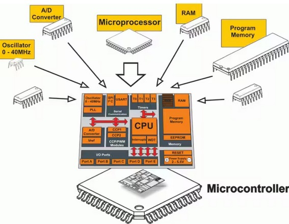

1. Mikrokontrolér (MCU) a jeho architektura
Mikrokontrolér je monolitický integrovaný obvod integrující procesorové jádro, paměťové subsystémy a periferie na jediném čipu. Na rozdíl od desktopových CPU je navržen pro deterministické řízení v reálném čase.
Blokové schéma a funkční celky
Z pohledu programátora je MCU definován svou vnitřní strukturou a způsobem, jakým CPU komunikuje s okolím:
Výpočetní a řídicí jádro CPU
- ALU (Arithmetic Logic Unit): Implementace aritmetických a logických operací nad daty v registrech.
- Registry: Sada nízkoúrovňových paměťových míst přímo v jádře. Konfigurace celého systému probíhá zápisem/čtením specifických řídicích registrů (Memory-Mapped I/O).
Paměťový subsystém
- Flash (Non-volatile): Paměť pro uložení binárního kódu a konstant. Data zůstávají zachována i bez napájení.
- SRAM (Volatile): Rychlá pracovní paměť pro data (heap, stack). Po ztrátě napájení dochází k vymazání obsahu.
Hardwarové zajištění běhu
- Oscilátor (Clock Source): Zdroj hodinového signálu definující taktovací frekvenci procesoru a synchronizaci periferií.
- Debug Interface (SWD / JTAG): Fyzické rozhraní pro on-chip debugging, umožňující přístup k interním stavům CPU, paměti a registrům během běhu.
- Power Management: Systém napájení (typicky 1.8V až 5V) s integrovanými regulátory a funkcemi pro reset při poklesu napětí (Brown-out reset).
3. Vývojový proces: Host vs. Target
Při vývoji embedded systémů pracujeme tak, že kód píšeme na výkonném počítači, ale výsledný program běží na malém čipu s omezenými zdroji.
Host Machine (PC)
Váš počítač (Windows/Linux/Mac). Zde probíhá:
- Psaní zdrojového kódu (typicky v jazyce C).
- Správa projektu v IDE.
- Samotný proces kompilace.
Target Device (MCU)
Cílový mikrokontrolér. Zde probíhá:
- Běh zkompilované binárky.
- Interakce s fyzickým hardwarem.
- Omezený prostor v řádech KB/MB.
1. Jazyk C v embedded
Ačkoliv existují alternativy (C++, Rust), jazyk C zůstává standardem. Nabízí ideální poměr mezi čitelností pro lidi a přímým přístupem k hardwarovým registrům bez zbytečné režie (overheadu).
2. Cross-Compiler (Křížový překladač)
Běžný kompilátor (např. v Visual Studiu) generuje instrukce pro váš procesor v PC (architektura x86). My však potřebujeme Cross-compiler. Ten běží na PC, ale generuje instrukce pro úplně jinou architekturu (např. ARM Cortex-M).
- Vstup: Soubory
.ca.h - Výstup: Binární soubor (
.bin,.hexnebo.elf) – čistá data pro paměť Flash.
3. HW Debugger / Programátor
Potřebujeme prostředníka – fyzické zařízení (programátor/debugger), které propojí USB port vašeho počítače s ladicím rozhraním čipu (různá rozhraní: SWD/JTAG).
Úloha Debuggeru:
1. Flashování: Zápis binárky do paměti Flash.2. Ladění: Umožňuje zastavit program v čipu, číst hodnoty z RAM a procházet kód řádek po řádku.
4 Cesta kódu: C ➔ Assembler ➔ Strojový kód
Mikrokontrolér nerozumí příkazu if (teplota > 20). Rozumí pouze specifickým číselným instrukcím uloženým v paměti Flash.
| Úroveň | Ukázka | Kdo to čte? |
|---|---|---|
| Jazyk C | a = b + 5; |
Programátor |
| Assembler (ASM) | ADDS r0, r1, #5 |
Low level / Debugger |
| Strojový kód | 0x1C48 (binárně 000111...) |
Procesor (ALU) |
Co jsou to instrukce?
Instrukce je základní příkaz, který procesor dokáže vykonat v jednom nebo několika taktech oscilátoru. Každá architektura (ARM, AVR, x86) má svou vlastní instrukční sadu.
LDR r1, [r0] — Načti (Load) hodnotu z adresy v registru r0 do r1.ADDS r1, r1, #1 — Přičti k hodnotě v r1 jedničku.STR r1, [r0] — Ulož (Store) novou hodnotu zpět na původní adresu.
Proč nás to zajímá?
Při psaní v C se o tento překlad stará kompilátor. Je ale důležité vědět, že:
- Jeden řádek v C může vygenerovat desítky instrukcí strojového kódu.
- Při debuggingu (ladění) často uvidíte Assembler, když se snažíte zjistit, proč se procesor chová jinak, než jste čekali.
- Binárka (.bin/.hex), kterou nahráváte do čipu, je vlastně jen dlouhý seznam těchto číselných instrukcí.
4. Paměť a organizace dat
Mikrokontroléry rodiny AVR využívají Harvardovu architekturu, která se vyznačuje fyzicky oddělenými adresními prostory pro instrukce programu a pro data.
| Segment | Typ paměti | Vlastnosti | Obsah |
|---|---|---|---|
| Flash | Non-volatile | Statická, Read-only | Programový kód, .rodata |
| SRAM | Volatile | Dynamická, R/W | .data, .bss, Stack, Heap |
| EEPROM | Non-volatile | Perzistentní, R/W | Konfigurace, kalibrace |
4.1 Alokace proměnných v C
Způsob deklarace proměnné určuje její umístění v paměťové mapě. Kritickým aspektem je inicializace globálních proměnných, která ovlivňuje spotřebu obou typů pamětí.
// Sekce .rodata (pouze Flash)
const uint16_t sensor_lut[4] = {10, 20, 30, 40};
// Sekce .data (Flash -> SRAM)
int setpoint = 25;
// Sekce .bss (SRAM, nulováno při startu)
uint16_t adc_buffer[16];
void main(void) {
// Stack (SRAM, lokální scope)
uint8_t status;
}
6. GPIO (General Purpose Input/Output)
Piny mikrokontroléru jsou v digitálním režimu definovány třemi parametry: logickou úrovní, směrem toku dat a impedančním stavem. U řady AVR-Dx jsou piny organizovány do portů reprezentovaných v paměti jako instance struktury PORT_t.
Elektrické charakteristiky
- VIH / VIL: Rozhodovací úrovně pro logickou 1 a 0.
- Source / Sink: Proudové limity pinu (typicky do 20mA).
- Hi-Z: Stav vysoké impedance při konfiguraci jako vstup (vysoký vstupní odpor, minimální proudový odběr).
Konfigurační registry
- DIR: Data Direction Register (0 = IN, 1 = OUT).
- OUT: Output Value Register.
- IN: Input Value Register (čtení stavu synchronizátoru).
- PINnCTRL: Per-pin Configuration (Pull-up, Invert, Input Sense).
6.1 Registry pro atomickou manipulaci
Architektura AVR-Dx implementuje hardwarové aliasy pro zápis do registrů DIR a OUT. Tyto aliasy umožňují modifikaci jednotlivých bitů bez nutnosti instrukcí pro bitový posuv a logický součet/součin v CPU, což zamezuje hazardním stavům při souběhu s přerušením.
| Suffix | Funkce | Operace |
|---|---|---|
SET | Atomic Set | Logická 1 na dané pozici nastaví bit, ostatní nemění. |
CLR | Atomic Clear | Logická 1 na dané pozici vynuluje bit, ostatní nemění. |
TGL | Atomic Toggle | Logická 1 na dané pozici neguje stav bitu. |
6.2 Implementace v C
// Přímá manipulace s registry portu PA
#include <avr/io.h>
void gpio_setup(void) {
// Definice PA3 jako výstup (nastavení bitu 3 v registru DIR)
PORTA.DIRSET = PIN3_bm;
// Aktivace vnitřního pull-up rezistoru na PA4
// PINnCTRL registry jsou přístupné jako pole prvků struktury
PORTA.PIN4CTRL = PORT_PULLUPEN_bm;
}
void gpio_output_control(void) {
PORTA.OUTSET = PIN3_bm; // PA3 -> LOG 1
PORTA.OUTCLR = PIN3_bm; // PA3 -> LOG 0
PORTA.OUTTGL = PIN3_bm; // PA3 -> Inverze stavu
}
uint8_t read_input(void) {
// Čtení aktuálního stavu portu
return (PORTA.IN & PIN4_bm);
}Poznámka: PoužitíOUTTGLpro negaci stavu pinu je efektivnější než sekvencePORTA.OUT ^= PIN3_bm, protože nevyžaduje čtení a následný zápis registru v CPU, ale je provedeno přímo logikou portu v jediném hodinovém cyklu.
7. Časovače (Timery) a přerušení
Obecná charakteristika periferie
Timer/Counter je autonomní hardwarový modul, který nezávisle na CPU inkrementuje (nebo dekrementuje) hodnotu ve svém čítači v rytmu hodinového signálu. Na rozdíl od softwarového čekání (např. funkce _delay_ms()), které plně vytěžuje procesor prázdnými instrukcemi, běží časovač na pozadí a umožňuje CPU vykonávat jinou výpočetní činnost nebo přejít do úsporného režimu.
V embedded systémech plní časovače tři základní role:
- Časování (Timing): Generování přesných časových intervalů nebo periodických událostí.
- Čítání (Counting): Sledování počtu vnějších událostí (pulzů) na vstupním pinu.
- Modulace (PWM): Generování signálů s proměnnou střídou pro řízení výkonu (např. jas LED, otáčky motoru).
TCB (Timer/Counter B) je 16bitová periferie určená pro měření a časování specifických událostí. Zatímco hlavní 16bitový časovač TCA je navržen pro generování vícenásobných PWM signálů, TCB je zjednodušená, vysoce přesná jednotka určená pro:
- Periodic Interrupt: Generování časové báze (např. systémový tick pro RTOS).
- Input Capture: Měření délky pulzu (např. signál z dálkového ovládání nebo senzoru).
- Frequency Measurement: Měření periody vstupního signálu.
- Single Shot: Vygenerování jednoho impulzu s přesnou délkou.
Klíčový koncept: Jak vzniká přerušení?
Přerušení (Interrupt) je mechanismus, kdy hardware pozastaví vykonávání hlavní smyčky while(1), odskočí do speciální funkce (ISR) a po jejím skončení se vrátí zpět. Tím je zajištěn deterministický časový průběh kritických úloh, které nesmí být ovlivněny délkou běhu hlavní smyčky.
CCMP vyvolá ISR, která zajistí výpočet regulace nezávisle na zbytku programu.
7.1 Mechanismus přerušení (Interrupt Service Routine)
Přerušení je hardwarový mechanismus umožňující pozastavení vykonávání hlavní programové smyčky a okamžité předání řízení dedikované funkci (ISR). Po ukončení ISR dojde k obnovení stavu procesoru a pokračování v původní sekvenci instrukcí.
Polling (Dotazování)
- Periodické čtení stavu v hlavní smyčce.
- Vysoká latence závislá na délce
while(1). - Zbytečné vytížení CPU i v době nečinnosti.
Interrupt (Přerušení)
- Asynchronní reakce vyvolaná hardwarem.
- Minimální latence (určena dobou uložení kontextu).
- Efektivní správa výkonu (možnost využití Sleep módů).
7.2 Časovač TCB (Timer/Counter B)
TCB0 je 16bitový časovač optimalizovaný pro precizní měření času a generování periodických událostí. V režimu Periodic Interrupt dochází k inkrementaci čítače až do shody s hodnotou v registru CCMP, což vyvolá příznak přerušení.
Konfigurace TCB0 pro periodické přerušení
Při frekvenci periferních hodin fCLK_PER = 4 MHz odpovídá hodnota 4000-1 v registru CCMP periodě 1 ms.
Aby TCB fungoval jako časovač, musíme nastavit jeho mód na Periodic Interrupt.
#include <avr/io.h>
#include <avr/interrupt.h>
void timer_init(void) {
// Definice periody (Top value)
TCB0.CCMP = 3999;
// Povolení přerušení při přetečení (Capture/Compare Interrupt Enable)
TCB0.INTCTRL = TCB_CAPT_bm;
// Konfigurace: Zdroj hodin CLK_PER, režim Periodic Interrupt, zapnutí timeru
TCB0.CTRLA = TCB_CLKSEL_CLKDIV1_gc | TCB_ENABLE_bm;
// Globální povolení přerušení v CPU (SREG I-bit)
sei();
}7.4 Implementace ISR
V xc8 se obsluha přerušení definuje makrem ISR() s příslušným vektorem. Pro korektní funkci je nutné v rámci ISR provést manuální kvitování (clear) příznaku v registru INTFLAGS.
// Vektor přerušení pro TCB0
ISR(TCB0_INT_vect) {
// Kvitování přerušení zápisem log. 1 do příznakového registru
TCB0.INTFLAGS = TCB_CAPT_bm;
// Fyzická akce: Negace výstupu portu
PORTA.OUTTGL = PIN3_bm;
}7.5 Kritická pravidla pro ISR
- Délka vykonávání: ISR musí být maximálně efektivní. Komplexní výpočty nebo čekací smyčky (delay) v přerušení blokují ostatní procesy a systémové časování.
- Kvalifikátor volatile: Proměnné sdílené mezi ISR a hlavní smyčkou musí být deklarovány jako
volatile, aby se zabránilo nežádoucím optimalizacím kompilátoru při čtení z registrů. - Atomicita: Při přístupu k vícebajtovým proměnným, které mění ISR, musí být v hlavní smyčce dočasně zakázána přerušení (kritická sekce), aby nedošlo k přečtení nekonzistentních dat.
8. UART (Universal Asynchronous Receiver-Transmitter)
Obecný princip a asynchronní přenos
UART je sériový komunikační protokol, který k přenosu dat využívá pouze dva vodiče: TX (Transmit) a RX (Receive). Označení asynchronní znamená, že rozhraní nesdílí společný hodinový signál (Clock).
Aby komunikace fungovala, musí se obě strany předem dohodnout na parametrech:
- Baudrate: Přenosová rychlost (počet symbolů za sekundu). Typické hodnoty jsou 9600 nebo 115200 bps.
- Frame Format: Struktura datového rámce (počet datových bitů, parita, počet stop bitů). Nejčastější je formát 8N1 (8 datových bitů, žádná parita, 1 stop bit).
- Start/Stop bity: Protože neexistuje sdílený Clock, začátek přenosu signalizuje Start bit, který synchronizuje přijímač s vysílačem.
UART na AVR128DB48 (USART Periferie)
U čipů řady AVR-Dx se periferie označuje jako USART, protože podporuje i synchronní režim. Pro základní komunikaci s PC však využíváme asynchronní mód.
Výpočet Baudrate
Hodnota pro registr BAUD se vypočítá na základě frekvence periferií ($f_{CLK\_PER}$) a požadované rychlosti ($BAUD_{rate}$). Pro asynchronní režim (16x oversampling) platí vztah:
$$BAUD_{reg} = \frac{64 \cdot f_{CLK\_PER}}{S \cdot BAUD_{rate}}$$
Kde $S$ je počet vzorků na bit (typicky 16).
Implementace v C
Příklad inicializace USART3 (který je na AVR128DB48 Curiosity Nano kitu připojen k USB převodníku) a funkce pro odeslání znaku:
#include <avr/io.h>
void uart_init(uint32_t baudrate) {
// 1. Nastavení pinu TX (PB0) jako výstupní
PORTB.DIRSET = PIN0_bm;
// 2. Výpočet a nastavení Baudrate (pro 4MHz takt a 9600 bps)
// Výsledek (64 * 4000000) / (16 * 9600) = 1666
USART3.BAUD = (uint16_t)((64 * 4000000) / (16 * baudrate));
// 3. Povolení vysílače (Transmitter)
USART3.CTRLB = USART_TXEN_bm;
}
void uart_send_char(char c) {
// Čekání na vyprázdnění vysílacího bufferu (DRE - Data Register Empty)
while (!(USART3.STATUS & USART_DREIF_bm));
// Zápis dat do registru spustí samotný fyzický přenos
USART3.TXDATAL = c;
}
void uart_send_string(const char* str) {
while (*str) {
uart_send_char(*str++);
}
}STATUS obsahuje příznak DREIF, který nám říká, zda je hardware připraven přijmout další bajt k odeslání. Pokud bychom do TXDATAL zapsali dříve, než se předchozí bajt odešle, data by byla přepsána.
9. Analogové periferie: ADC, DAC a VREF
Mikrokontroléry AVR-Dx umožňují precizní práci s analogovým signálem. Klíčem k úspěchu je pochopení vztahu mezi referenčním napětím, rozlišením a reálnou hodnotou v milivoltech.
1. ADC (Analog-to-Digital Converter)
ADC převádí vstupní napětí na digitální číslo. AVR128DB48 disponuje 12bitovým ADC, což znamená, že rozsah mezi 0V a referencí dělí na 4096 kroků.
Digitální hodnota = (V_vstup / V_ref) * 4095
2. DAC (Digital-to-Analog Converter)
DAC provádí opačný proces – z digitálního čísla vytvoří na pinu reálné napětí. U řady AVR-Dx je DAC 10bitový (rozsah 0 až 1023). Je ideální pro generování funkcí nebo řízení analogových obvodů.
3. VREF (Voltage Reference)
Referenční napětí definuje stabilitu a přesnost převodu. AVR128DB48 má interní referenční zdroj, který lze softwarově přepínat (např. 1.024V, 2.048V, 2.5V, 4.096V).
Implementace pro AVR128DB48
#include <avr/io.h>
void analog_init(void) {
// 1. Konfigurace VREF: Nastavení 2.048V pro ADC0
VREF.ADC0CTRLA = VREF_REFSEL_2V048_gc;
// 2. Konfigurace ADC: 12-bit, povolit, dělička hodin 16
ADC0.CTRLA = ADC_RESSEL_12BIT_gc | ADC_ENABLE_bm;
ADC0.CTRLC = ADC_PRESC_DIV16_gc;
ADC0.MUXPOS = ADC_MUXPOS_AIN2_gc; // Snímání z pinu PD2
// 3. Konfigurace DAC: Povolit výstup na pin PD6
VREF.DAC0CTRLA = VREF_REFSEL_2V048_gc; // I DAC potřebuje referenci
DAC0.CTRLA = DAC_ENABLE_bm | DAC_OUTEN_bm;
}
uint16_t read_adc(void) {
ADC0.COMMAND = ADC_STCONV_bm; // Start měření
while (!(ADC0.INTFLAGS & ADC_RESRDY_bm)); // Čekání na výsledek
return ADC0.RES; // 0 až 4095
}
void write_dac(uint16_t value) {
DAC0.DATAL = (value & 0xFF); // Zápis 10-bitové hodnoty
DAC0.DATAH = (value >> 8);
}10. Sériové sběrnice: SPI a I2C (TWI)
Na rozdíl od UARTu jsou sběrnice SPI a I2C synchronní. To znamená, že sdílejí společný hodinový signál (Clock), což umožňuje mnohem vyšší rychlosti a spolehlivější přenos dat.
10.1 SPI (Serial Peripheral Interface)
SPI je nejrychlejší sběrnice pro komunikaci na krátké vzdálenosti (SD karty, displeje, rychlé ADC). Pracuje v režimu Full-Duplex (data tečou oběma směry současně).
Zapojení a vodiče (4-vodičové):
- SCK (Serial Clock): Hodinový signál generovaný Masterem.
- MOSI (Master Out Slave In): Datová linka z Masteru do periferie.
- MISO (Master In Slave Out): Datová linka z periferie do Masteru.
- SS / CS (Slave Select / Chip Select): Výběr konkrétního čipu (aktivní v logické 0).
Implementace na AVR128DB48:
// Inicializace SPI v režimu Master
void spi_init(void) {
// 1. Nastavení směrů pinů (MOSI, SCK a SS jako výstupy)
PORTA.DIRSET = PIN4_bm | PIN6_bm | PIN7_bm;
// 2. Konfigurace SPI: Master, Mode 0, Clock/4
SPI0.CTRLA = SPI_MASTER_bm | SPI_ENABLE_bm;
}
uint8_t spi_transfer(uint8_t data) {
SPI0.DATA = data; // Start přenosu
while (!(SPI0.INTFLAGS & SPI_IF_bm)); // Čekání na dokončení
return SPI0.DATA; // Návrat přijatých dat
}10.2 I2C / TWI (Two-Wire Interface)
I2C je úsporná sběrnice využívající adresování. Na rozdíl od SPI stačí pro připojení desítek zařízení pouze dva vodiče. Pracuje v režimu Half-Duplex.
Zapojení a vodiče (2-vodičové):
- SDA (Serial Data): Obousměrná datová linka.
- SCL (Serial Clock): Hodinový signál.
Adresování a Start/Stop:
Každá komunikace začíná START podmínkou, následuje 7bitová adresa zařízení a bit pro zápis/čtení (R/W). Zařízení odpovídá bitem ACK (Acknowledge).
Ukázka zápisu na AVR128DB48 (TWI0):
void i2c_init(void) {
// Nastavení rychlosti 100 kHz (Standard Mode)
TWI0.MBAUD = 10;
TWI0.MCTRLA = TWI_ENABLE_bm;
TWI0.MSTATUS = TWI_BUSSTATE_IDLE_gc; // Inicializace stavu sběrnice
}
void i2c_write_byte(uint8_t addr, uint8_t data) {
// Start + Adresa (bit 0 = 0 pro zápis)
TWI0.MADDR = addr << 1;
while (!(TWI0.MSTATUS & TWI_WIF_bm)); // Čekání na odeslání adresy
// Odeslání dat
TWI0.MDATA = data;
while (!(TWI0.MSTATUS & TWI_WIF_bm));
// Stop podmínka
TWI0.MCTRLB = TWI_MCMD_STOP_gc;
}11. PWM a Timer TCA (Dual-slope režim)
Obecný princip: Co je to PWM?
PWM (Pulse Width Modulation) neboli pulzně šířková modulace je technika pro simulaci analogového napětí pomocí digitálního signálu. Rychlým střídáním stavu 0 a 1 vytvoříme průměrnou hodnotu napětí.
- Perioda (Frekvence): Jak často se celý cyklus opakuje.
- Střída (Duty Cycle): Poměr času, kdy je signál v logické 1, k celkové periodě. Vyjadřuje se v procentech (0–100 %).
Dual-slope vs. Single-slope
U AVR128DB48 Timer TCA nabízí režim Dual-slope PWM. Na rozdíl od běžného režimu, kdy čítač počítá pouze nahoru (0 → MAX), v Dual-slope režimu počítá nahoru a hned zase dolů (0 → MAX → 0).
Výhody Dual-slope:
- Symetrické pulzy (střed pulzu je vždy ve stejném místě).
- Poloviční frekvence přepínání při stejném rozlišení, což vede k nižšímu rušení (EMI).
Konfigurace TCA0 na AVR128DB48
V tomto příkladu nastavíme PWM na pinu PA0 (výstupní kanál WO0 časovače TCA0).
#include <avr/io.h>
void pwm_init(void) {
// 1. Nastavení pinu PA0 jako výstupní
PORTA.DIRSET = PIN0_bm;
// 2. Nastavení periody: V Dual-slope je frekvence f = f_clk / (2 * N * PER)
// Pro f_clk = 4MHz, bez děličky a PER = 2000 bude f_pwm = 1000 Hz
TCA0.SINGLE.PER = 2000;
// 3. Nastavení střídy (Compare 0) - např. 50% (1000 z 2000)
TCA0.SINGLE.CMP0 = 1000;
// 4. Konfigurace Waveform Generation: Dual-slope PWM, aktivace kanálu 0
TCA0.SINGLE.CTRLB = TCA_SINGLE_CMP0EN_bm | TCA_SINGLE_WGMODE_DSOP_gc;
// 5. Spuštění časovače bez děličky (Clock / 1)
TCA0.SINGLE.CTRLA = TCA_SINGLE_CLKSEL_DIV1_gc | TCA_SINGLE_ENABLE_bm;
}
void set_pwm_duty(uint16_t value) {
// Dynamická změna střídy (např. jas LED)
if (value <= 2000) {
TCA0.SINGLE.CMP0 = value;
}
}SINGLE a SPLIT. Zde používáme SINGLE (jeden 16bitový časovač), který je pro přesné PWM ideální.
12. Event System (EVSYS): Magie bez účasti CPU
Obecný princip: Periferie mluví s periferií
Standardně musí procesor (CPU) hlídat stav periferií: například když přeteče časovač, procesor musí skočit do ISR a tam ručně spustit ADC převod. Event System tuto cestu obchází. Umožňuje propojit Generátor (např. Timer) přímo s Uživatelem (např. ADC) pomocí vnitřních hardwarových kanálů.
Hlavní výhody:
- Nulová latence: Reakce na událost proběhne v řádu nanosekund.
- Úspora energie: CPU může zůstat v režimu spánku (Sleep), zatímco Timer periodicky spouští ADC a ten ukládá data.
- Deterministické časování: Převody probíhají v naprosto přesných intervalech, neovlivněných jiným běžícím kódem.
Praktický scénář: Timer spouští ADC
V tomto nastavení využijeme RTC (Real Time Counter) nebo Timer TCA jako generátor události "Overflow". Tato událost skrze kanál 0 spustí měření na ADC0.
Implementace na AVR128DB48
#include <avr/io.h>
void evsys_init(void) {
// 1. Nastavení generátoru: Přetečení Timeru TCA0 bude generovat událost
// Kanál 0 bude přenášet událost z TCA0_OVF
EVSYS.CHANNEL0 = EVSYS_CHANNEL0_TCA0_OVF_LUN_gc;
// 2. Nastavení uživatele: ADC0 bude "konzumovat" událost z kanálu 0
// Tato událost automaticky vyvolá spuštění převodu (Start Conversion)
EVSYS.USERADC0START = EVSYS_USER_CHANNEL0_gc;
}
void adc_event_init(void) {
// Konfigurace ADC pro práci s Event Systemem
// Musíme povolit "Event Control", aby ADC reagovalo na vnější podněty
ADC0.EVCTRL = ADC_STARTEV_bm;
// Standardní inicializace ADC (12-bit, zapnutí)
ADC0.CTRLA = ADC_RESSEL_12BIT_gc | ADC_ENABLE_bm;
}
void timer_for_evsys_init(void) {
// Nastavení Timeru TCA0 na periodu, ve které chceme vzorkovat (např. 100 Hz)
TCA0.SINGLE.PER = 40000;
TCA0.SINGLE.CTRLA = TCA_SINGLE_CLKSEL_DIV1_gc | TCA_SINGLE_ENABLE_bm;
}Vyzvednutí výsledku: Role ISR
I když je spuštění převodu plně automatické (Timer → EVSYS → ADC), procesor musí výsledek po dokončení převodu přečíst. K tomu využijeme přerušení od ADC (Result Ready).
// 1. Povolení přerušení v inicializaci ADC
void adc_event_init(void) {
ADC0.EVCTRL = ADC_STARTEV_bm; // ADC reaguje na událost z EVSYS
ADC0.INTCTRL = ADC_RESRDY_bm; // Povolení přerušení "Result Ready"
ADC0.CTRLA = ADC_RESSEL_12BIT_gc | ADC_ENABLE_bm;
}
// 2. Obsluha přerušení - zde si CPU vyzvedne hotová data
ISR(ADC0_RESRDY_vect) {
// Smazání příznaku přerušení proběhne automaticky přečtením registru RES
uint16_t namerena_hodnota = ADC0.RES;
// Zde můžeme data zpracovat (např. poslat přes UART)
process_data(namerena_hodnota);
}ISR ani while smyčka, která by spouštěla převod. Jakmile tyto tři periferie nastavíš a spustíš timer, data v registru ADC0.RES se budou aktualizovat zcela automaticky.
15. Systémová stabilita a Power Management
15.1 Watchdog Timer (WDT) – Hardwarový dozor
Watchdog je nezávislý časovač, který slouží jako poslední linie obrany. Jeho úkolem je restartovat mikrokontrolér, pokud se software zacyklí nebo selže v důsledku vnějšího rušení. Pokud program pravidelně "nenakrmí" Watchdog, hardware vyvolá System Reset.
Bezpečný zápis pomocí ccp_write_io
U řady AVR-Dx je nastavení Watchdogu chráněno mechanismem CCP (Configuration Change Protection). Pro zápis musíme použít vestavěnou utilitu, která zajistí, že zápis proběhne v kritickém časovém okně 4 instrukčních cyklů.
#include <avr/wdt.h>
#include <avr/cpufunc.h> // Nutné pro ccp_write_io
void wdt_init(void) {
// Bezpečný zápis do chráněného registru CTRLA
// Nastavení periody na 1 sekundu
ccp_write_io((void *) &WDT.CTRLA, WDT_PERIOD_1KCLK_gc);
}
int main(void) {
wdt_init();
while(1) {
// Hlavní aplikační smyčka
do_logic();
// Resetování čítače - "krmení psa"
wdt_reset();
}
}15.2 Správa napájení (Sleep Modes)
Pro snížení spotřeby (např. při provozu z baterie) disponuje AVR128DB48 režimy spánku. Každý režim vypíná jinou část čipu:
| Režim | Aktivní části | Vlastnosti |
|---|---|---|
| Idle | Periferie, DMA, Event System | Bleskové probuzení, běží UART i Timery. |
| Standby | Volitelné periferie | Kompromis mezi spotřebou a funkčností. |
| Power-down | Pouze WDT a externí přerušení | Nejnižší spotřeba (µA), zastaveny hlavní hodiny. |
15.3 Kombinovaný režim: WDT Interrupt (Budík)
Watchdog na AVR-Dx umí víc než jen reset. Lze jej nastavit tak, aby místo restartu vyvolal přerušení. To je ideální pro probouzení z nejhlubšího spánku (Power-down) v pravidelných intervalech.
#include <avr/sleep.h>
void setup_low_power(void) {
// Nastavení WDT na 8s v režimu přerušení
ccp_write_io((void *) &WDT.CTRLA, WDT_PERIOD_8KCLK_gc);
// Nastavení typu spánku na nejhlubší možný
set_sleep_mode(SLEEP_MODE_PWR_DOWN);
}
// ISR, které se zavolá po probuzení Watchdogem
ISR(WDT_vect) {
// CPU se probudilo, po návratu z ISR pokračuje main
}
int main(void) {
setup_low_power();
sei();
while(1) {
// Uspání procesoru
sleep_mode();
// --- ZDE CPU SPÍ ---
// Po 8 sekundách se CPU probudí a provede úkol
measure_and_report();
}
}